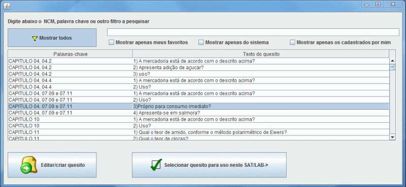

Quesitos
Ajuda

Cadastro e seleção de quesitos

Na tela de quesitos, estão disponíveis as seguintes ações:
1. "Mostrar todos" e "Aplicar Filtro" - preenche a tabela com os quesitos já cadastrados no Banco de Dados, de acordo com o filtro aplicado.
Filtros:
"Mostrar apenas meus favoritos"
"Mostrar apenas do sistema"
"Mostrar apenas os cadastrados por mim"
2. Editar/Criar quesito: o acionamento deste botão salva as edições realizadas, após as devidas validações, os dados digitados nos campos da tela no Banco de Dados, criando novo quesito.
3. Selecionar quesito para uso neste SAT/LAB: o acionamento deste botão vincula o quesito ao item do SAT/LAB, adicionando-o à lista da tela anterior, se for o caso.
CAMPOS DISPONÍVEIS
Palavras-chaves - adicione palavras separadas por vírgula para poder pesquisar pelo quesito depois, vinculando-o a um nome de produto ou a um NCM, por exemplo.
Texto - texto do quesito que será exibido na SAT/LAB.
PESQUISANDO QUESITOS
Os campos disponíveis na parte de cima da tela, ao lado do botão "Mostrar todos", permitem filtrar a lista de quesitos.